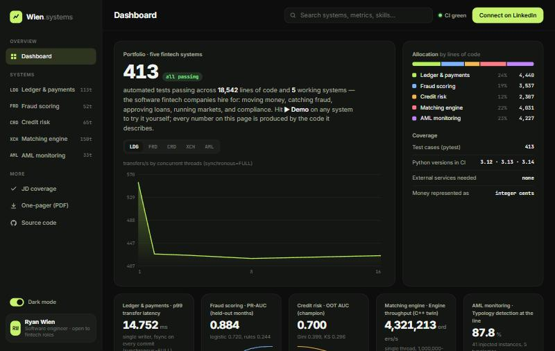
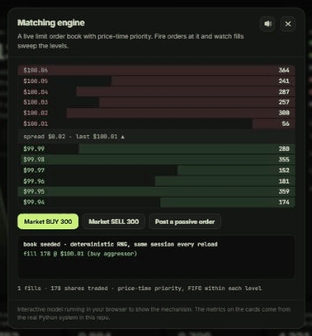

Ledger and payments API
Double-entry journal, idempotent transfers, holds and reconciliation. Retries replay instead of double-charging, and money is conserved under concurrent load.
113 tests · 14.8 ms p99 · 0 cents of drift
Open to fintech roles
I'm Ryan Wien, a software engineer who builds the systems fintech companies run on: ledgers, fraud scoring, lending, trading and compliance. Each one is tested against the ways it can break, measured, and open for you to try.

Featured
Integer money, point-in-time data, deterministic runs, and every number on the page written by the code it describes.
Double-entry journal, idempotent transfers, holds and reconciliation. Retries replay instead of double-charging, and money is conserved under concurrent load.
113 tests · 14.8 ms p99 · 0 cents of drift
Point-in-time features shared by training and serving, decision bands priced in dollars, and drift monitoring.
0.884 PR-AUC · $50k a month saved vs rules
A scorecard with out-of-time validation, a fair-lending check, adverse-action reasons and a generated model card.
0.700 OOT AUC · 0.914 adverse impact ratio
One price-time priority order book built twice. The C++20 twin keeps the same rules and ports the same tests, and runs twenty times faster on the same machine.
4,321,213 orders/s · 0.6 µs p99 · 150 tests
Typology rules, graph analytics for mule rings, and a case queue with a tamper-evident audit trail.
87.8% typologies caught · 33 tests
Also built
A tool for the analysts who decide whether to trust a financial conclusion.
List the assumptions behind a conclusion and label each one supported, mixed or unverified. A live summary shows what is proven, what is uncertain and what still needs a source. Nothing counts as supported without a cited source, and a missing source on a load-bearing assumption blocks the verdict. It records reasoning; it does not give financial advice.
44 tests · runs in your browser · same rules in Python and JavaScript, tested against each other
Proof
A 21 second tour: the dashboard, the engine in both languages, then three demos firing.

Hiring for fintech, payments or trading systems? The fastest way to reach me is LinkedIn.